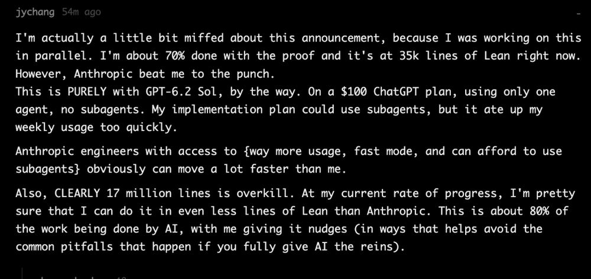

86科技/AI · 1
黎曼猜想 Lean 证明代码暴砍 99.5%：1740 万行压到 7.6 万行，Anthropic 团队动手（HN 306 分）
四维 82跨源 ×1.05（IT之家 + Hacker News 原仓库各自一手）×1.05≈ 86
轰动全网的 1740 万行黎曼猜想机器证明迎来史诗级瘦身：原版 175,188 个文件在 AWS 高配机上要编译 21 小时，新版只剩约 7.6 万行，一台 12 核、24GB 内存的普通机器在已有 Mathlib 缓存下 1—2 小时即可从头构建。仓库 grh-lean 由研究者 Lennart Sernau与 Anthropic 同事及 Claude 协作完成，同时给出可读版（约 30 万行）与紧凑版（约 7.6 万行），只依赖 propext、Classical.choice、Quot.sound 三条公理，证的是黎曼猜想与 Dirichlet L 函数的广义黎曼猜想。README 明确标注是「研究产物、不维护、不收贡献」，且只过了机器检查、没有数学家通读、也没有配套论文。当日 Hacker News 306 分、138 条评论。
💡 点评99.5% 的压缩比确实漂亮，但作者自己把「未经数学家审阅」写进首页，比任何宣传语都更能说明这份证明目前的地位——它是可编译的形式化产物，还不是被学界接受的定理。IT之家报道与 Hacker News 原始仓库是两条独立一手材料，按跨源 ×1.05 计。
IT之家 / Hacker News · 原文 →